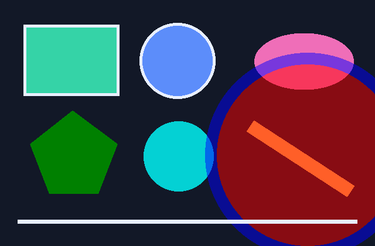

Apple M1 · 6/6 sampled-pixel checks pass

# Foafnaut SVG gallery — native GPU result **Apple M1 · 640 × 420 · 9 SVG primitives · 6/6 sampled-pixel checks pass.**  [Full-size PNG](gallery.png) · [Exact SVG input](gallery.svg) · [Machine-readable results](results.json) · [Lean reference artifact](lean-reference.json) · [Capture log](capture-log.txt) This is the saved output of the native Lean/WASM → WebGPU renderer, captured on 2026-10-30 at 01:06:15 UTC. The PNG encodes the saved GPU RGB pixels losslessly; a browser did not rerender the SVG to make this image. Dan edited the gallery markup to check that the renderer responds, including making the translucent red/blue circle larger. Those edits are preserved in `gallery.svg`. Expected samples were regenerated afterward from that current input with the **same development executable**, then compared against the saved GPU image. This post-capture comparison ran on the CPU and did not create a new GPU image. All six samples agree within the renderer's existing tolerance of one 8-bit channel value. | Pixel (x, y) | Lean expected RGB | Saved GPU RGB | Maximum channel error | Result | | --- | --- | --- | --- | --- | | (1, 1) | `[18, 24, 39]` | `[18, 24, 39]` | 0 | PASS | | (160, 105) | `[53, 211, 167]` | `[53, 211, 167]` | 0 | PASS | | (320, 210) | `[4, 209, 212]` | `[4, 209, 212]` | 0 | PASS | | (480, 210) | `[137, 12, 20]` | `[136, 12, 19]` | 1 | PASS | | (320, 315) | `[4, 209, 212]` | `[4, 209, 212]` | 0 | PASS | | (638, 418) | `[18, 24, 39]` | `[18, 24, 39]` | 0 | PASS | These samples check a small part of the picture. They are not a full-image independent comparison, a theorem about GPU correctness, or SVG conformance. Shared defects in the Lean CPU expressions and WGSL generation can escape. The SVG profile supports selected basic shapes and painting, while paths, transforms, text/CSS, scripting and many other features remain unsupported. ## Official SVG tests are a separate result The pinned WPT slice currently reports **38 unsupported / 0 visual matches**. No gallery sample is counted as a WPT pass. [Per-test WPT baseline](https://github.com/danbri/factoidal-core/blob/dfd67b6f99182d911292a74b5749facaa2815d2b/tests/external/svg/baseline-2026-10-30.json). ## Provenance and reproduction - Development executable SHA-256: `037c77d5ddd3a01611eee627b80958cb64cba06281c9303515f1559d334dba3d`. - Input SVG SHA-256: `80b04192159d0ac6c3acd8fff8493b6f96ed0fe44589f07085c1e7f57586ab43`. - Original saved PPM SHA-256: `ff0f9e52fb18c1afbc42704ff781564eb2aca3375a93083e0765679c31428a40`. - PNG SHA-256: `b75c99db9e98154b82c43984aa0bcdb74448e61281d94815ac9fbcc8badb3225`. - The [source port, core PR #271](https://github.com/danbri/factoidal-core/pull/271), is later than this development capture. Its new package still needs its own desktop smoke test. - [Build pipeline PR #9](https://github.com/danbri/factoidal-builds/pull/9) adds the separate native demo artifact set. This report is published evidence, not a binary release. With the matching executable and files in a directory: ```sh ./native-webgpu-svg-darwin-arm64 gallery.svg render-svg.ppm --no-open ./native-webgpu-svg-darwin-arm64 gallery.svg --emit-artifact lean-reference.json ``` The log has terminal escape codes removed and local paths normalized. It did not hash the input/image at capture time; this report hashes the preserved files and records that limitation. RGB PNG cannot independently recheck alpha. [Track SVG coverage and native rendering work in issue #1209](https://github.com/danbri/factoidal/issues/1209).